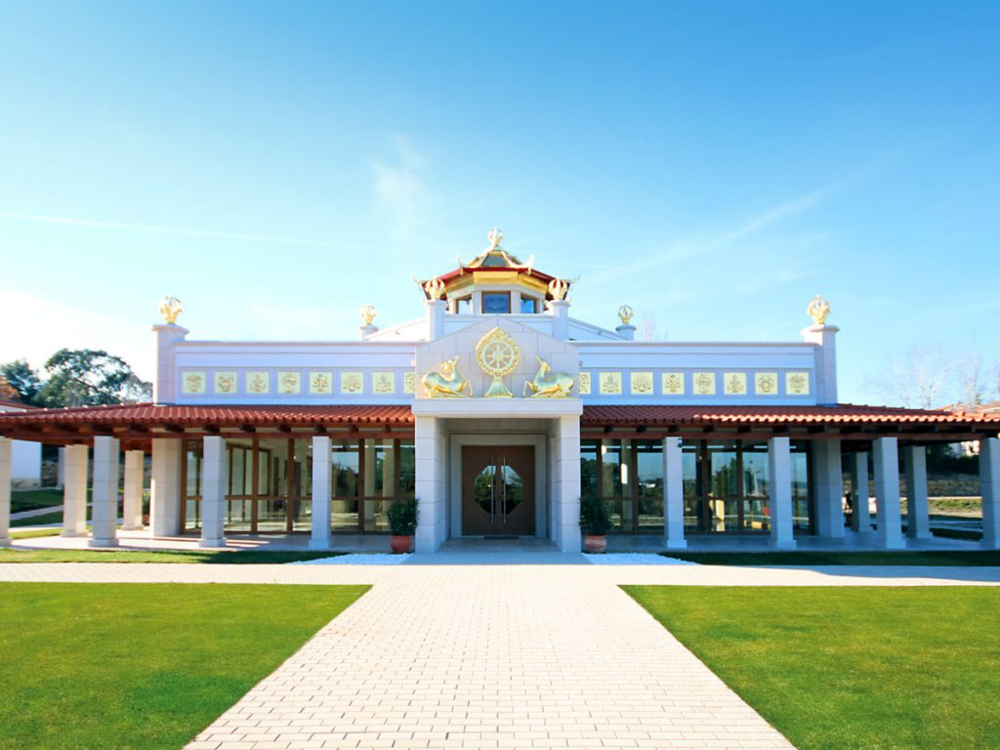

International Community
The New Kadampa Tradition has a vibrant community across the globe. Through the international Temples project, they aim to have a Kadampa Temple in every major city worldwide.
Should you wish to spend some time experiencing the community and what it is like to be amongst like-minded people, I highly recommend attending one of their international festivals or even booking into one of their centres for a working holiday.
International Festivals
There are three international festivals per year. The traditions mother centre in the lake district hosts two of these over the spring and summer seasons. The third festival then moves around to a different international location every fall.
These festivals usually have over 3000 attendees gathering from across the globe in one place for a meaningful holiday. There is no obligation to work at a festival; however, it is run entirely by volunteers should you be the sort who likes to keep busy whilst making new friends.
The teachings are provided in English and translated into multiple languages via headsets. You can book translation with one easy click during the booking stage.